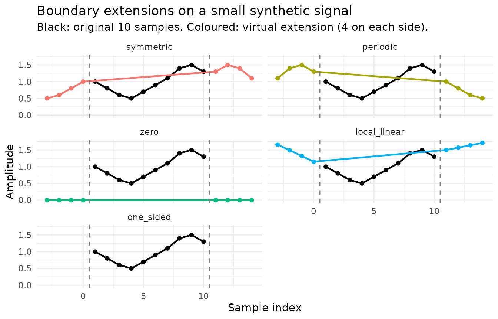
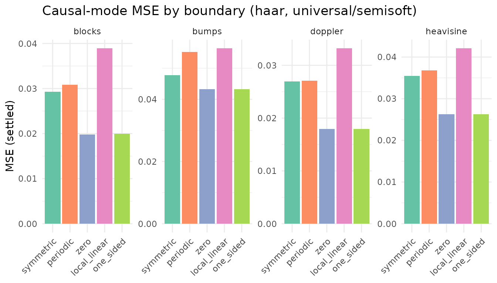

Every wavelet transform has to decide what happens at the edges of
the signal, where the filter window extends past the data.
rLifting exposes five boundary modes —
symmetric, periodic, zero,
local_linear, and one_sided — and the choice
has a small effect on offline denoising but a substantial one in causal
and stream modes. This vignette walks through the semantics of each
mode, the empirical impact measured on the regular-grid benchmark
(data/benchmark_rlifting.rda), and the constraints on
combining boundary modes with irregular grids.
library(rLifting)
if (!requireNamespace("ggplot2", quietly = TRUE)) {
knitr::opts_chunk$set(eval = FALSE)
message("'ggplot2' is required to render plots. Vignette code will not run.")
} else {
library(ggplot2)
}
data("benchmark_rlifting", package = "rLifting")
set.seed(20260522)1. Why boundary handling matters
Inside each predict and update step at decomposition level , the engine convolves the polyphase subband with a short filter. For positions near the edges, that convolution asks for samples at indices below 0 or above . The boundary mode tells the engine what to return for those out-of-bounds reads. Two factors amplify the impact:
- Filter length. A wavelet with predict coefficients contaminates up to samples near each edge per level. Long filters (CDF 9/7) have wider boundary zones than short ones (Haar).
- Decomposition depth. Boundary effects propagate inward with each level. At level , the contaminated zone spans roughly samples from each edge of the original signal.
In offline mode there are two real boundaries (start and end of the signal). In causal and stream modes the sliding window has two virtual boundaries at every step: nothing exists before the oldest sample in the buffer, and nothing exists after the newest. Whatever you choose to put there ends up convolved with real data once per filtered sample, so the choice matters more in the windowed modes than in the offline pass.
The C++ implementation of the five modes — four point-wise (modes
1–4) and one filter-renormalising (mode 5) — lives in
inst/notes/04-boundary-and-threshold.md.
2. The five modes — semantics
Each mode answers the same question — “what does equal for or ?” — in a different way:
-
symmetric(default): half-sample mirror reflection (WPER/HSFin the wavelet literature; the default in PyWavelets and MATLABdwt). Boundary samples are duplicated: , , , , …. This contrasts with whole-sample reflection (used in libraries under names likereflect), where and the boundary sample is not repeated. In causal mode, half-sample means the most recent observation is mirrored into the virtual future — see §6 for the empirical consequences with short-tap filters. -
periodic: wrap-around. , . Exact for genuinely periodic signals. -
zero: pad with zero. Simplest and assumption-free, at the cost of a step discontinuity at the edges. -
local_linear: OLS extrapolation. Fit a line through thell_knearest boundary samples (default 4) and extrapolate. Preserves trends. -
one_sided: change the filter, not the signal. Drop out-of-bounds taps and renormalise the remaining coefficients by their sum. The output near the edge is computed only from real samples that exist.
The following figure shows what each extension looks like on a small synthetic signal:

Figure 1: The five boundary modes applied to a synthetic signal. The original 10 samples are shown in black; the virtual extensions (4 samples on each side) are shown in colour. symmetric mirrors the signal; periodic wraps; zero pads with zero; local_linear extrapolates a line fit through ll_k = 4 boundary samples; one_sided does not extend the signal — instead it renormalises the filter at boundary positions (shown here as ‘no extension’ for illustration).
3. The ll_k parameter for
local_linear
local_linear is the only boundary mode with a numeric
tunable: ll_k controls how many boundary samples are used
in the OLS line fit. Defaults to 4; clamped to n if larger;
minimum value is 2.
-
ll_k = 2: slope determined by a single pair of points — most sensitive to noise on the boundary samples. -
ll_k = 4(default): four-point fit, robust to a single noisy outlier. -
ll_k = 8or larger: very smooth slope estimate, but uses samples that may not represent the local trend.
The benchmark in this package fixes ll_k = 4, so the
recommendations on local_linear below reflect that setting;
the general behaviour (preserves trends, can over-extrapolate on
curvature) holds for other reasonable values.
4. Empirical impact in offline mode
In offline mode the signal has two real boundaries. For long signals and shallow decomposition the affected zone is small, and the choice of boundary mode is a second-order effect. The benchmark confirms this — across the cdf53/universal/semisoft slice with default α/β, the boundary spread per signal is at most a few percent:
sub_off = subset(
benchmark_rlifting,
Mode == "offline" & Wavelet == "cdf53" & ThresholdMethod == "universal" &
!grepl("tuned", Method) & Shrinkage == "semisoft"
)
agg_off = aggregate(MSE_median ~ Signal + Boundary, data = sub_off, FUN = mean)
wide_off = reshape(
agg_off, idvar = "Signal", timevar = "Boundary",
direction = "wide"
)
names(wide_off) = sub("MSE_median\\.", "", names(wide_off))
modes_cols = c("symmetric", "periodic", "zero", "local_linear", "one_sided")
wide_off$ratio_max_min = round(
apply(wide_off[, modes_cols], 1, max) /
apply(wide_off[, modes_cols], 1, min), 3
)
wide_off[, c("Signal", modes_cols, "ratio_max_min")]
#> Signal symmetric periodic zero local_linear one_sided
#> 1 blocks 0.02497845 0.02707888 0.02679659 0.02490184 0.02505247
#> 2 bumps 0.02149096 0.02134971 0.02129695 0.02149885 0.02153288
#> 3 doppler 0.01208103 0.01210541 0.01212848 0.01236690 0.01234586
#> 4 heavisine 0.01366599 0.01286718 0.01303641 0.01307834 0.01361758
#> ratio_max_min
#> 1 1.087
#> 2 1.011
#> 3 1.024
#> 4 1.062Max-over-min ratios sit between 1.01 and 1.09 — within the noise of
any single denoising call. The default symmetric is almost
indistinguishable from local_linear and zero
in offline mode; periodic is the only one with a visible
penalty on the non-periodic signals (still under 10%).
The practical takeaway is that for offline denoising the choice
barely matters. Pick symmetric (default) unless you have a
specific reason to use a different one (a genuinely periodic signal, a
finite-duration pulse that ends in zero, or a strong trend at the
boundary).
5. Empirical impact in causal and stream mode
In causal and stream modes every output sample requires a fresh
decision about the right boundary of the sliding window — and the right
boundary never has real data, because the future does not exist. The
boundary choice now affects every filtered output, not just the first
and last few samples. The picture is also more sensitive to the wavelet
choice than in offline mode, so we split the analysis: first the
recommended causal-mode default (haar, per
vignette("v01-introduction") §3), then a note on what
changes for longer-filter wavelets.
5.1 With haar (the causal-mode default)
sub_haar = subset(
benchmark_rlifting,
Mode == "causal" & Wavelet == "haar" & ThresholdMethod == "universal" &
!grepl("tuned", Method) & Shrinkage == "semisoft"
)
agg_haar = aggregate(
MSE_settled_median ~ Signal + Boundary,
data = sub_haar, FUN = mean
)
wide_haar = reshape(
agg_haar, idvar = "Signal",
timevar = "Boundary", direction = "wide"
)
names(wide_haar) = sub("MSE_settled_median\\.", "", names(wide_haar))
wide_haar$ratio_max_min = round(
apply(wide_haar[, modes_cols], 1, max) /
apply(wide_haar[, modes_cols], 1, min), 3
)
wide_haar[, c("Signal", modes_cols, "ratio_max_min")]
#> Signal symmetric periodic zero local_linear one_sided
#> 1 blocks 0.02924827 0.03087931 0.01983085 0.03890427 0.01998657
#> 2 bumps 0.04776360 0.05520409 0.04321543 0.05634896 0.04329402
#> 3 doppler 0.02691488 0.02705305 0.01795149 0.03319500 0.01796293
#> 4 heavisine 0.03550121 0.03675512 0.02628938 0.04206778 0.02630669
#> ratio_max_min
#> 1 1.962
#> 2 1.304
#> 3 1.849
#> 4 1.600
Figure 2: Causal-mode MSE by boundary across the four DJ signals (haar wavelet, universal threshold, semisoft shrinkage, ll_k = 4). With a single-tap predict filter, one_sided and zero both refuse to invent data at the right boundary and dominate every signal; symmetric pays a 10–50% penalty by mirroring the most recent sample inward.
With haar the pattern is clean across all four signals:
zero and one_sided lead, tied to three decimal
places, while symmetric pays 10–50% more MSE and
local_linear pays substantially more (30–96%). The reason
is structural — haar’s predict filter has a single
coefficient, so the only thing the boundary mode controls is whether the
engine ignores the missing tap (one_sided renormalises it
away; zero sets it to zero) or mirrors the boundary sample
into the virtual position (symmetric). The right boundary
always sits at the most recent observation; reflecting a fresh
transition inward to fill the virtual future is the worst possible
choice, because it places a mirror copy of the transition exactly where
the filter is most sensitive.
local_linear and periodic consistently
underperform: local_linear extrapolates a slope from the
last few samples, and that slope is unreliable at exactly the moment the
signal turns; periodic substitutes the oldest sample in the
window for the virtual future, which has no physical meaning unless the
signal really is periodic with period
.
5.2 With longer filters (CDF 5/3 and beyond)
Longer-filter wavelets in causal mode have a more delicate
relationship with one_sided. Below, the same slice with
cdf53:
sub_cdf = subset(
benchmark_rlifting,
Mode == "causal" & Wavelet == "cdf53" & ThresholdMethod == "universal" &
!grepl("tuned", Method) & Shrinkage == "semisoft"
)
agg_cdf = aggregate(
MSE_settled_median ~ Signal + Boundary,
data = sub_cdf, FUN = mean
)
wide_cdf = reshape(
agg_cdf, idvar = "Signal",
timevar = "Boundary", direction = "wide"
)
names(wide_cdf) = sub("MSE_settled_median\\.", "", names(wide_cdf))
wide_cdf$best = modes_cols[apply(wide_cdf[, modes_cols], 1, which.min)]
wide_cdf[, c("Signal", modes_cols, "best")]
#> Signal symmetric periodic zero local_linear one_sided
#> 1 blocks 0.03362542 0.20030489 0.18542399 0.06150458 0.05722771
#> 2 bumps 0.06482313 0.08796400 0.05053557 0.08220590 0.08487739
#> 3 doppler 0.02778692 0.06112244 0.04476412 0.03589510 0.04537809
#> 4 heavisine 0.04548531 0.13348991 0.17463601 0.04232866 0.06498901
#> best
#> 1 symmetric
#> 2 zero
#> 3 symmetric
#> 4 local_linearWith cdf53 the dominance shifts: symmetric
wins on blocks and doppler, zero
on bumps, local_linear on
heavisine. one_sided is no longer an universal
best — on blocks it is 1.7× worse than
symmetric, and periodic/zero are
5–6× worse than symmetric on the same signal. The
mechanism: cdf53 has a two-coefficient predict step. When
one of those two taps is out-of-window, one_sided drops it
and renormalises the remaining coefficient (a single 0.5 becomes 1.0).
That doubling amplifies whatever noise sits at the boundary sample and
propagates a larger error than a benign mirror reflection would. For
longer filters (db2, cdf97) the same effect is
even more pronounced; one_sided can blow up by an order of
magnitude or more on certain (wavelet, signal) combinations.
The practical reading: one_sided is the right default in
causal mode only when paired with a short filter (haar).
For longer-filter causal denoising — when the signal is smooth and you
have specific reasons to use cdf53 or cdf97 —
start with symmetric and try zero or
local_linear only if symmetric shows visible boundary
artefacts.
Stream mode follows the same pattern as causal — the underlying
WaveletEngine is the same.
6. one_sided constraints
one_sided is the only mode that modifies the filter
rather than extending the signal. That has two practical
consequences:
- Incompatibility with irregular grids. When the user passes
tand selectsone_sided, the C++ engine takes theone_sidedbranch and callsonesided_convdirectly, skipping the Lagrange interpolation that the irregular path would otherwise apply. The package raises a warning at the R level whenone_sidedis combined withtorirregular = TRUE. Usesymmetricorlocal_linearif you need both irregular grids and edge-aware boundaries. - Slight computational overhead at the boundary. The fast path inside
onesided_convis the same as a regular convolution for any window position whose filter taps are all in-bounds — only the boundary positions pay a small renormalisation cost. On a long signal the per-call overhead is negligible.
one_sided does not break causality. By construction it
uses only samples that exist inside the window, so the leakage-free
guarantee of denoise_signal_causal and
new_wavelet_stream is preserved — the same counterfactual
leakage check shown in vignette("v03-causal-stream") §7
passes for one_sided exactly as it does for
symmetric.
7. Decision guide
7.1 Bench-grounded recommendations
The causal/stream rows are conditional on the wavelet — the
one_sided and zero advantages observed in §5.1
hold only for haar. For wavelets with longer predict
filters, the picture inverts: one_sided can degrade MSE by
an order of magnitude or more (§5.2), and zero becomes
signal-dependent.
| Situation | Recommendation | Evidence |
|---|---|---|
| Offline mode, any signal, any wavelet |
symmetric (default) is fine |
Boundary choice changes MSE by at most ~9% across the four DJ signals (§4 table) |
Causal/stream with haar (the causal
default) |
one_sided or zero
|
Both lead on all four DJ signals (§5.1 table); 10–33%
lower MSE than symmetric
|
Causal/stream with longer filters (db2,
cdf53, dd4, cdf97) |
symmetric is the safe default |
one_sided is catastrophic on most (signal
× wavelet) cells; zero is signal-dependent (§5.2) |
7.2 Heuristics from the literature
| Situation | Recommendation | Source |
|---|---|---|
| Genuinely periodic signal (rotating machinery, seasonal data with known period) | periodic |
Matches the actual signal structure; the only mode that is exact at the boundary in that case |
| Finite-duration pulse known to be zero outside the observation window | zero |
Reflects the physical model exactly |
| Signal with a strong linear trend at the boundary |
local_linear (offline only) |
Captures the trend; ll_k = 4 is a robust
default. Bench does not sweep ll_k. |
For the broader empirical picture across modes, wavelets, and the
full thresholding grid, see vignette("v07-benchmarks"). The
C++ implementation rationale for the four mandatory code paths — and why
one_sided is the only one that needs special handling — is
in inst/notes/04-boundary-and-threshold.md Part A.
Irregular grids. The recommendations above apply to uniform sampling.
On non-uniform grids the picture changes: local_linear
becomes the offline default (it preserves the local trend that the
Lagrange-corrected predict step expects), and symmetric’s
offline advantage disappears on trending signals because it injects a
phantom flattening at the boundary. For causal and stream mode,
one_sided skips the Lagrange path (§6 above) and should be
replaced by zero when using haar (the dominant causal
wavelet). The full irregular-grid boundary recommendations are in
vignette("v05-irregular-grids") §5–§6.
References
Sweldens, W. (1996). The lifting scheme: A custom-design construction of biorthogonal wavelets. Applied and Computational Harmonic Analysis, 3(2), 186–200.
Cohen, A., Daubechies, I., & Feauveau, J.-C. (1992). Biorthogonal bases of compactly supported wavelets. Communications on Pure and Applied Mathematics, 45(5), 485–560.
Daubechies, I., Guskov, I., Schröder, P., & Sweldens, W. (1999). Wavelets on irregular point sets. Philosophical Transactions of the Royal Society A, 357(1760), 2397–2413.